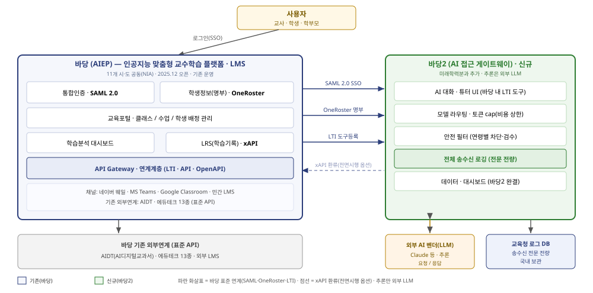
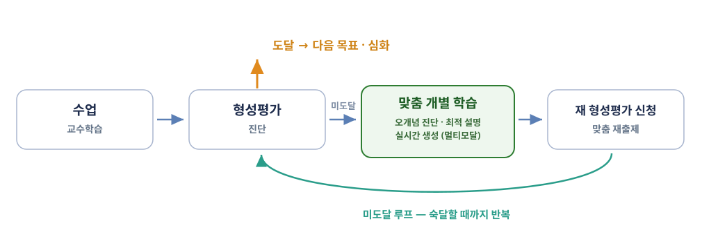
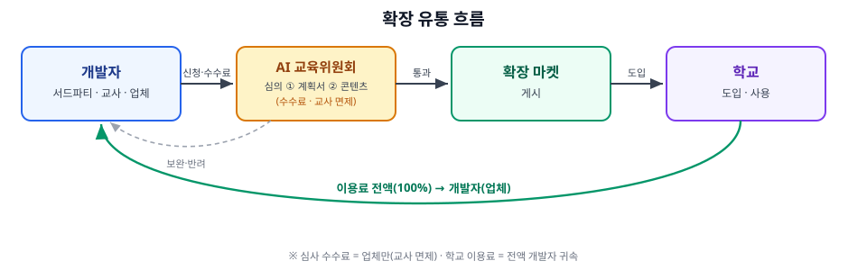

제주교육AI플랫폼(바당2) 개요 — 간결판
정식 명칭: 「제주교육AI플랫폼」 · 시스템/브랜드명: 바당2(영문 표기 BADANG2). 「개요(안)」(내부 문서)과 같은 목차*를 따르며, 핵심 표는 그대로 두고 서술만 압축했다. 상세 논증(법리 전개·선례 분석·설계 근거)은 개요(안) 및 각 절이 가리키는 참조 문서에 있다. 상충 시 개요(안)이 우선한다. 발표·보고 시
## / ###단위가 슬라이드 한 장에 대응한다.🟦 한 줄 요약
「제주교육AI플랫폼」(바당2) = AI 활용 교직원 업무는 물론, AI로 분석·맞춤 데이터로 개별화 학습이 가능한 제주교육공동체(학생·교사·교직원) 전용 공공 「AI 활용 플랫폼」. 접근 → 활동 → 기록 → 분석 → 맞춤 환류. 단순 AI 챗봇이 아니라, 데이터가 쌓여 수업·업무로 되돌아오는 선순환이 핵심.
0. 개발 배경
왜 지금인가 — 공교육은 시대에 맞는 교육 인프라를 직접 조성해, 모든 학생이 그 시대의 핵심 역량을 차별 없이 갖추도록 책임져야 한다. 지금 그 핵심 역량은 AI 활용이며(학생은 이미 AI를 쓰고 있다), 이를 안전하고 형평하게 보장하려면 실시간 수업·AI 접근·안전·기록을 한데 갖춘 공공 수업 플랫폼이 필요하다. (전체 논의는 AI 교육 패러다임 참조.)
바당과 바당2의 관계
| 구분 | 바당 (AIEP) | 바당2 (AI 게이트웨이 계층) |
|---|---|---|
| 정의 | LMS — 학습관리 플랫폼(그릇) | 바당 위에 얹는 AI 접근·추론 게이트웨이(알맹이) |
| 소유·대상 | 11개 시·도 공동(NIA 위탁) | 제주교육공동체 전용 — 제주 직접 소유·통제 |
| 변화 대응 | 공동개발 → 변경에 다자 합의(경직·지연) | AI 변화에 확장·변경 용이(제주가 기민하게) |
| 핵심 역할 | 명부·계정·권한 / 클래스·수업·배정 / 표준 연동 / 학습기록 | AI 접근 공적 보장 · 송수신 전체 로깅 · 안전필터 · AI 수업도구 |
| AI | 없음(2차 구축 과제, 현안 명시) | 있음 — 본 계층이 제공 |
| 데이터 | 학습기록 정본 저장소(LRS) | AI 송수신 전문 원본 확보 · 학습기록·분석은 바당2에서 완결 |
| 안전·거버넌스 | AI 통제 장치 없음 | 안전필터·위기감지·비식별·접근권한 |
| 관계 | 표준 연계 그릇(SAML·OneRoster·LTI·xAPI) | 표준으로 결합 — LMS 재구축 아님 |
검수 지표 — 「벤더 구독 재가입 최소화」: 개통 시점에 교직원·교사가 일상 업무와 수업 준비를 하는 데 벤더 유료 구독을 별도 가입할 필요가 없어야 한다. 시범 중 "바당2로 안 되어 벤더 앱을 따로 썼다" 는 사례를 계량하고, 그 목록이 다음 릴리스의 백로그가 된다. 기능 1 「개통 필수 목록」이 그 실현 수단이다.
국내외 위치 — 새 발명이 아니라 '첫 온전한 조립'
바당2의 식별 특징은 모든 AI 사용이 통과하는 공공 게이트웨이이며, 다음 8요소의 결합이다.
| ① 공공 소유 게이트웨이 | ② 벤더앱급 UX·기능 집합 | ③ 전량 송수신 로깅 | ④ PII 비식별(텍스트+비전) |
|---|---|---|---|
| ⑤ 다중 LLM 라우팅·폴백 | ⑥ 안전필터·위기감지 | ⑦ 토큰·비용 통제 | ⑧ 교사·확장 생태계 |
- 국내외 20여 개 플랫폼을 같은 자로 재본 결과 8요소를 모두 갖춘 사례는 공개 자료상 확인되지 않는다.
- 최근접: 🇸🇬 싱가포르 SLS(모델무관 가드레일 게이트웨이 — 전량 로깅·비식별은 탐지 수준) · 반면교사: 🇺🇸 美 LAUSD "Ed"(벤더 소유·비식별 부재, §3-1). 상세는 「유사 플랫폼 리뷰」(내부 문서).
1. 바당(AIEP) 현황 — 다섯 공백
아래는 모두 교육청이 스스로 만든 공식 문서(2026 바당 운영 기본 계획(안) · AIEP 사용자 매뉴얼 · 구축 현안 사항)가 직접 진술한 것이다 — 외부의 주장이 아니다. 상세는 「운영 계획으로 본 바당 격차·타당성」(내부 문서) · 바당 현황 및 개선 방안.
| # | 문제 | 내용 |
|---|---|---|
| 1 | 자체 생성형 AI 기능 없음 | 현안 명시 "AI모델 부재(2차 구축 시 개발 필요)" — 학생이 직접 쓸 생성형 AI 대화·튜터가 없다 |
| 2 | 학습데이터 수집 한계 | "빅테크 외 연계 에듀테크 학습데이터 수집 불가" — SSO로 연결만 할 뿐 송수신 전문을 교육청이 확보하지 못한다 |
| 3 | 분석·활용 미흡 | 분석 고도화는 2차 구축 과제 — 데이터가 흩어져 효과 검증·생기부 근거로 쓰기 어렵다 |
| 4 | 안전·거버넌스 공백 | 교육청이 직접 안전필터·로깅·통제하는 장치가 없다 |
| 5 | 사업 중복·혼선 우려 | AIEP(11시도/NIA) ↔ 교육부(KERIS) 트랙 간 예산 중복·혼란 우려 |
바당2는 정확히 ①②④를 메운다.
현행 교직원 AI 업무 서비스 — 공백을 임시로 메우는 상용 서비스
제주교육청은 2026년 교직원용 상용 AI 업무 서비스를 별도 도입해 운영 중이다(멀티 LLM 대화 · 한글 문서 AI 편집 · 업무 도구·챗봇 제작 · NEIS 학사·급식 연동 · 관리 콘솔). 철저히 교직원 전용이며 학생 기능은 없다.
| 의미 | 내용 |
|---|---|
| ① 최소 기준선 | 교직원은 이미 익숙하다 — 개통 시 이보다 못하면 그 순간 실패다 |
| ② 검증된 요구사항 명세 | 실사용 기능 구성은 업무 수요의 실증 자료이며 ISMP의 SRS에 그대로 쓸 수 있다 |
| ③ 브릿지 | 바당2 개통(2028-09)까지의 임시 수단 — 전환 관계(대체·병존·이관)는 §6 |
(상품명·업체명은 발주 공정성을 위해 기재하지 않는다. 기능 전수는 「현행 교직원 AI 업무 서비스 기능 분석」(내부 문서) 참조.)
2. 바당 시스템 구성도 — 표준 기반 개방형 연계

[그림] 바당(AIEP·LMS) ↔ 바당2(AI 게이트웨이) 표준 연계 구성도 — 추론은 외부 벤더, 인증·명부·도구 실행은 바당 표준(SAML·OneRoster·LTI)으로 결합. 기록·분석은 바당2에서 완결(점선 = 전면시행 옵션인 xAPI 환류).
바당은 처음부터 외부 시스템을 표준 API로 끼우도록(plug-in) 설계된 개방형 플랫폼이다.
| 연동 영역 | 표준 / 구성요소 |
|---|---|
| 인증(SSO) | SAML 2.0 · 통합인증 |
| 학생정보(명부) | OneRoster V1.1 |
| 도구·서비스 연동 | LTI / API (외부기관·에듀테크·콘텐츠) |
| API 계층 | API Gateway · API 포털 · OpenAPI · 모니터링 |
| 학습기록 | xAPI · LRS · LOM 메타데이터 |
| 외부연계 대상 | AIDT · 11개 교육청 기존시스템 · 외부 LMS · 에듀테크 |
시사점: 바당은 AIDT·에듀테크·외부 LMS를 이미 표준 API로 연동하고 있다 → 바당2도 "또 하나의 외부 도구"로 붙으면 된다. 소스 복제(fork)·수정이 아니라 밖에서 끼우는 결합이므로 NIA·타 시도와 코드 충돌·라이선스 문제가 없고, 새 플랫폼을 세우지 않으니 사업 중복 우려(§1-⑤)도 줄어든다.
3. 바당2 개발 개요
3-1. 정의와 위치
- 기존 바당(LMS) 위에 얹는 AI 접근 게이트웨이 계층. 학생·교사의 모든 AI 사용이 이 게이트웨이를 통과한다.
- 설계 원칙(게이트웨이 독점): 모든 길목을 독점해야 전량 로깅·안전필터·통제가 가능하다. 벤더 앱 직접 사용으로는 송수신 전문 확보·통제가 불가능하다 — 본 사업의 직접 근거.
- AI 추론은 외부 API에서 수행 → 교육청에 LLM 추론용 GPU 팜 불필요. 모델은 어댑터로 연동 — 새 모델은 코어 수정 없이 추가(§3-3).
⚠️ 반면교사 — 왜 공공이 소유해야 하는가
🇺🇸 LAUSD "Ed"(AllHere · 5년 약 600만 달러 · 2024.3 출시). 내부고발(前 엔지니어링 시니어 디렉터): "데이터를 해외로 보내고, 너무 많은 데이터를 보내며, 제3자가 그 데이터를 로깅한다." → 벤더 파산(Chapter 7) → 서비스 중단 → 2024.9 미 법무부 대배심 소환장·연방 형사 수사.
| # | 교훈 |
|---|---|
| 1 | 벤더 소유 인프라는 벤더와 함께 무너진다 — 공공이 게이트웨이·로그·데이터를 소유해야 한다 |
| 2 | 「데이터 이용 협약」은 계약서일 뿐 강제 장치가 아니다 — 비식별이 기술로 강제되지 않으면 협약은 지켜지지 않는다 |
| 3 | 내부 경고가 무시됐다 — 검수·운영에 작동하는 경고 채널이 있어야 한다 |
국내 선례 — AI디지털교과서 실태점검(2025.5): 학습이력 통합 누적에 목적 명확화·최소처리 위반 시정권고 → 「교육 목적」 선언만으로 광범위한 축적은 정당화되지 않는다. · 이루다(2021.4): 포괄 동의 불인정, 비식별 미조치 자체가 유책 → 「동의받았다」는 형식적 방어는 깨진다.
공통 교훈: 위험은 게이트웨이 패턴 자체가 아니라 ① 누가 소유하며 ② 비식별이 실제로 강제되고 ③ 처리 근거가 항목별로 특정되는가다. 바당2의 공공 소유 · 게이트웨이 독점 · 강제 비식별 · 국내 보관이 이 셋에 대응한다. (선례 인용 원칙: 국내 규제기관 선례가 해외 사례보다 강한 권위를 갖는다. 상세 — 「외부 LLM 전송의 개인정보보호법 쟁점」(내부 문서).)
설계 원칙(두 번째 금지선) — 「추론은 벤더, 도구 실행은 코어」
벤더의 서버 실행형 도구(코드 실행·웹검색·파일 생성)를 사용하지 않는다. 벤더 인프라에서 실행되므로 학생이 올린 파일·코드·검색어가 넘어가 전량 로깅·비식별·국내 보관이 그 지점에서 끊긴다. 동일 기능은 코어 자체 구현(격리 샌드박스·검색 프록시).
| # | 자체 구현이 불가피한 이유 (대체 검토 결과) |
|---|---|
| ① | 「문서공방」의 hwpx 정본 생성 — 국내 표준이라 벤더 런타임에 라이브러리가 없다 |
| ② | 확장 마켓의 서드파티 확장 — 상주 런타임이 필요한데, 벤더 코드 실행은 모델이 짠 코드를 1회 실행하는 도구일 뿐 |
| ③ | 「바당검색」 — 단순 검색이 아니라 교육용 화이트리스트·연령 차등 필터가 걸린 프록시 |
샌드박스는 어차피 지어야 한다 — 코드 실행만 벤더로 빼면 실행 환경이 둘로 늘 뿐 부담은 줄지 않는다. 위험 완화(RFP 요건): 밑바닥부터 만들지 않는다 — 검증된 오픈소스 격리 런타임 기반 채택 + 커널 취약점 상시 대응(패치 SLA·담당 주체)을 지속 개선 계약의 과업 범위에 명시. 자체 구축의 실질 위험은 "구축"이 아니라 "상시 보안 운영"에 있다. (정공법이다 — 주요 벤더 API는 bash·텍스트에디터·메모리 도구를 애초에 호출자가 실행하는 방식으로 정의한다. 서버 실행형이 오히려 편의 옵션이다.)
독점의 대가 — 두 리스크와 대응
| 리스크 | 대응 |
|---|---|
| ① 단일 장애점(SPOF) | 코어 HA·무중단 배포·오토스케일 · LLM 장애 시 타 벤더 폴백 · degrade · 서킷브레이커 → SLA 보장 · 벤더별 기능 대응표 유지 · 분기 1회 폴백 전환 훈련. 게이트웨이 코어도 검증된 오픈소스 LLM 게이트웨이 기반 채택 우선 검토 |
| ② 우회 | 품질이 낮으면 학생이 벤더 앱으로 샌다 → UI/UX 품질이 성패의 전제(기능 1) · 과제·평가는 바당2 경유만 인정(세션 토큰·산출물 표식) · MDM·네트워크 정책 — 정책+기술 병행 |
"안전·로깅은 못 끄되 추론은 멈출 수 있다" 는 실패 모드를 인정하고 설계한다.
3-2. 바당 ↔ 바당2 연계 구조
| 결합 축 | 방식 | 효과 |
|---|---|---|
| 인증 | SAML 2.0 SSO | 재로그인 없음 |
| 명부 | OneRoster V1.1 사전 수신 | 학급 전체 명단 확보 → 현황판이 '아직 시작 안 한 학생'까지 표시 |
| 도구·UX | LTI 1.3 도구 등록 + Deep Linking | 바당 클래스 안에서 클릭 한 번에 SSO · 교사가 차시에 바당2 활동 배치 |
| 기록·분석 | 바당2 자체 완결 | 대시보드·생기부 근거를 바당2가 직접 제공 (xAPI 환류는 전면시행 옵션) |
| 호출·관리 | API Gateway 경유 | 표준·안전 호출 |
한 줄 정리: 바당2 = 단일 게이트웨이 — 수업 화면만 바당의 「LTI 외부 도구」로 등록하고 업무 화면은 SAML 직접 접속(§3-6).
저장 역할 분리 (중복 구축 아님)
| 기록 종류 | 정본 위치 | 성격 |
|---|---|---|
| 학습기록 | 바당2 DB | 학습분석·대시보드·생기부 근거. 이벤트 스키마는 xAPI로 사상 가능하게 설계(환류 시 변환기만 추가) |
| 송수신 전문 원본(raw 전량) | 교육청 로그 | 안전·감사·개인정보용. 바당엔 원래 없던 것 — 중복이 아니라 신설 |
| 학습 상태 모델(지식 추적) | 바당2 DB | 학습기록의 요약·현재값 — 기록으로부터 재산출 가능하게 설계 |
| 실시간 운영 상태 | PostgreSQL · Redis | 세션·컨텍스트 · 안전 이벤트 · 식별↔익명 매핑 · 토큰·비용 |
이유: 학습기록 저장소는 기록을 쌓는 append 저장소이지 매 턴 컨텍스트를 저지연으로 읽고 쓰는 실시간 대화 운영 DB가 아니다.
3-3. 모듈형·확장 아키텍처 (설계 대원칙)
대원칙(불변): 새 모델·기능은 「코어 수정 없이」 추가한다. 모든 것을 인터페이스 뒤에 끼우는 어댑터 방식. 이 원칙이 흔들리면 모델·기능이 늘 때마다 메인 프로그램을 고쳐야 해 유지보수·확장이 무너진다.
| 계층 | 내용 |
|---|---|
| 코어(게이트웨이 · 얇고 고정) | 인증·SSO · 모델 라우터 · 안전필터 · 전량 송수신 로깅 · 데이터 적재 · 에이전트 오케스트레이션 · 바당 연계 — 길목을 독점하되 구체 구현은 코어에 박지 않는다 |
| 공유 도메인 서비스(내부 MCP) | 학습 상태 · 단일 집계 · 콘텐츠 저장소 · 성적 회송 브로커 · 단일 열람 게이트 · 동의 레지스트리 |
| 화면 계층 | 수업 화면(LTI) / 업무 화면(SAML) |
어댑터 — 모델·모달리티
- 모델 = 프로바이더 어댑터: 코어엔 공통 인터페이스 + 모델 레지스트리만. 새 벤더·모델(향후 교육부 교육특화 LLM 포함)은 어댑터 추가 + 설정 등록으로 붙는다 → 코어 라우터 무수정.
- 모달리티별 최적 엔진 조합: ① 대화·추론 ② 이미지 생성·편집 ③ 음성(STT·TTS)이 각각 독립 어댑터. 대화는 A사, 「이미지」은 B사, 「음성대화」는 자체 스택 — 사용자는 조합을 의식하지 않는다.
- 이는 벤더 앱이 구조적으로 할 수 없는 일이다 — 각 벤더 앱은 자사 엔진만 쓴다. 바당2만 분야별 최고를 조합할 수 있다.
- 기능 집합은 벤더 무관하게 하나. 모델을 바꾸면 바뀌는 것은 추론 품질뿐이고 화면·도구·기능명은 동일하다.
에이전트 오케스트레이션 — 코어 구성요소다
| 층 | 무엇 | 누가 |
|---|---|---|
| 추론 | 에이전트 한 명의 사고 | 벤더 (LLM API 호출 1회) |
| 도구 실행 | 그 에이전트의 검색·코드실행·파일생성 | 코어 (§3-1 두 번째 금지선) |
| 오케스트레이션 | 몇 명을·어떤 역할로·병렬인지·누가 검증하는지·어떻게 합칠지 | 코어 — 우리 인프라에서 구동 |
⚠️ 금지선은 「배포」다. 루프와 세션을 벤더 인프라에서 돌리는 관리형 에이전트 상품은 사용 금지 — N번의 송수신·중간 산출물이 전부 벤더 안에서 일어나고 코어는 최종 결과만 본다. 전량 로깅·비식별이 끊기고 벤더 규격에 종속되어 다중 LLM 라우팅이 무너진다. 호출이 N배이므로 위반의 대가도 N배다. ✅ 벤더 SDK 하네스를 우리 서버에서 구동하는 것은 권장이다 — 루프 코드를 밑바닥부터 짜라는 뜻이 아니다. 매 턴 개입 훅이 있어 N번의 호출이 모두 코어를 지나 N개의 로그가 남고 N번의 비식별이 걸린다. 다만 하네스는 벤더 SDK에 묶이므로 어댑터 뒤로 격리해 모델 라우팅을 지킨다. ✅ 벤더가 API 파라미터로 주는 기능은 적극 활용한다 — 프롬프트 캐싱 · 컨텍스트 자동 압축 · 적응형 사고 · 작업 예산(task budget) · 구조화 출력 · 배치.
구성요소 여섯 (RFP 필수 요건)
| 구성 | 하는 일 |
|---|---|
| 편성 | 몇 명을, 어떤 역할로, 병렬·순차 |
| 작업 예산 | 이 작업에 토큰 몇 개까지 — 초과 시 중단 (벤더 API가 제공 — 직접 만들지 않는다) |
| 결과 합성 | 다수결·교차검증·요약 — "3명 중 2명이 다르게 판정했다" 를 산출 |
| 실패 처리 | 일부 실패 시 부분 결과·재시도·중단 |
| 상관 로깅 | N개 호출이 한 작업임을 기록(작업 ID) — 없으면 감사·비용 분석 불가 |
| 폭주 차단 | 최대 반복·타임아웃·재귀 깊이 1단계 제한 · 서킷 브레이커 |
팬아웃은 값어치가 확실한 곳에만 — 서술형 교차 채점(기능 8) · 위기감지 오탐 검증(기능 5) · 문항 검증(기능 3) · 리서치(사용자 명시 요청 시). 일반 대화·자동 백그라운드에는 쓰지 않는다. 요청 1건이 API 호출 수백 회가 될 수 있으므로 「학생 1인당 API 사용료」는 팬아웃 배수를 반영해 재산정한다(§6).
확장은 「발명」이 아니라 「표준 조립」이다
기능은 모듈/확장 슬롯으로 붙는다 — 사람이 쓰는 도구는 LTI(LMS 안에 SSO된 채 임베딩), 모델이 쓰는 도구·데이터는 MCP. 확장 패키지의 다섯 층 중 표준이 있는 층은 절대 자체 포맷을 만들지 않는다.
| 층 | 채택 표준 |
|---|---|
| 도구·데이터 연결 | MCP (규격 변동 중 — RFP에 버전 고정·변경 통지, §6) |
| 화면 임베딩 | LTI 1.3 / Advantage |
| 문항·평가(문항·정답·해설·루브릭) | QTI 3.0 프로파일 — 전면 준수가 아니라 실사용 문항 유형만의 부분집합 |
| 성취기준(스킬 맵의 뼈대) | CASE — 국가 교육과정 코드를 이 위에 얹는다 |
| 콘텐츠 패키징·메타 | Common Cartridge · LOM |
| 공문·문서 산출물 | hwpx (KS X 6101) — 공문서 법정 표준 |
| 매니페스트 | 표준 없음 — 이 한 겹만 자체 정의(최소로) |
왜 표준이어야 하는가 — 생태계는 표준 위에서만 자란다. 문항을 제주 고유 포맷으로 만들면 ① 에듀테크 업체는 가진 QTI 문항을 다시 만들어야 해 마켓에 오지 않고 ② AIDT·타 시도 콘텐츠를 수용할 수 없고 ③ 제주 콘텐츠를 내보낼 수도 없어 자산이 제주 안에 갇힌다. 벤더 스킬 형식에 종속되지 않는다 — 벤더의 에이전트 스킬 형식은 3사가 제각각이다. 우리 매니페스트를 정본으로 두고 벤더 형식으로는 내보내기(export)만 한다. 벤더가 형식을 바꿔도 제주의 스킬 자산은 흔들리지 않는다. 부수 효과: 구축사가 규격을 창작할 필요가 없다 → 콘텐츠 트랙이 기다리는 「규격 조기 산출」의 리스크가 크게 준다(기능 10).
바당2 자신의 기능도 내부 MCP 서버로 구현한다 — 기능 3(학습 상태)·기능 4(기록 조회)·RAG를 내부 MCP로 노출한다. 그러면 코어 기능과 서드파티 확장이 같은 계약 위에 서고, "확장이 코어의 더 나은 대안이 될 수 있다" 가 선언이 아니라 구조가 된다. 서드파티에 내미는 SDK도 우리가 먼저 써서 검증된다.
코어 = 기본 보장선 / 확장 = 특화·대안
| 원칙 | 내용 |
|---|---|
| 첫 번째 금지선 | 인증·라우팅·전량 로깅·비식별·안전필터·위기감지를 모델이 호출하는 도구(MCP)로 만들지 않는다 — 도구는 본질적으로 모델이 호출 여부를 결정하므로, 안전 장치를 도구화하면 게이트웨이 독점이 무너진다. 이들은 모델이 건너뛸 수 없는 파이프라인 구간이다 |
| 불변 원칙(보안) | 어떤 어댑터·모듈·확장이 붙든 반드시 코어를 경유한다. MCP 도구 호출·반환 전문도 예외가 아니다 — 도구 반환 데이터는 프롬프트 인젝션·유출 벡터로 취급해 코어 로깅·안전필터를 통과시키고, 도구 권한 스코프는 호출한 학생·교사의 신원에 종속시킨다(남의 기록 조회 불가) |
| 코어도 늙는다 | 코어 기능은 기본 보장선일 뿐 만들어진 순간부터 낡는다 → 확장 마켓은 코어 기능의 「더 나은 대안」까지 허용하고, 무엇을 쓸지는 학교·교사가 고른다 → 코어가 낡아도 플랫폼은 늙지 않는다 |
| 공공은 토대, 민간은 속도 | 교육청은 예산·조달·심의 절차상 빠른 기능 변경이 구조적으로 어렵다. 그래서 공공은 플랫폼 기능(게이트웨이·표준 연계·로깅·안전·거버넌스 = 안정적 토대)에 충실하고, 빠르게 바뀌는 응용 기능은 업체 확장에 맡긴다 — 공공의 느림을 「안정적 토대 + 민간 속도」의 분업으로 전환한다 |
교사 토글(부차): 일부 기능 모듈은 교사가 학급·과목에 맞게 on/off. 단 코어·안전·개인정보는 항상 ON.
3-4. 인프라 요약
| # | 부하 축 | 성격 | 스케일 지표 |
|---|---|---|---|
| ① | AI 프록시 (SSE 스트리밍) | 연결 유지형 · CPU 저 | 동시 연결 수 |
| ② | 실시간 채팅 (WebSocket) | 연결 유지형 · CPU 저 | 동시 연결 수 |
| ③ | 비식별 엔진 — 텍스트 | CPU 집약 · 독립 스케일 | CPU |
| ④ | 비식별 엔진 — 비전 | 경량 GPU · 독립 스케일 | 프레임/초 |
| ⑤ | 코드 실행 샌드박스 | CPU·메모리 · 강한 격리 | 동시 실행 수 |
- CSAP 인증 클라우드 · 앱서버 2대+오토스케일 · PostgreSQL(HA) · Redis · 오브젝트 스토리지. 부하 기준 2,200명(초·중·고 각 2교).
- CPU 최대 소비처는 게이트웨이가 아니라 비식별 엔진이다 — 요청 1건마다 입·출력 양방향 NER 추론.
- LLM 추론용 GPU 팜은 불필요. 다만 ④에 경량 비전 가속기(소수) 필요.
- ⑤ 샌드박스 — 컨테이너 격리(경량 VM급)·네트워크 차단·시간/메모리 상한. 검증된 오픈소스 격리 런타임 기반 채택 우선 + 커널 취약점 상시 대응을 운영 계약에 명시(§3-1).
- 문서 처리는 별도 축이 아니다 — hwpx가 개방 표준이라 일반 리눅스 앱서버에서 처리된다(Windows 변환 팜 소멸).
- 확대 내성: 전면 확대 시 재설계가 아니라 증설로 가는 구조(무상태·큐 분리·수평 확장)를 비기능 요건으로 명시.
- 백업·DR: RPO/RTO를 수치로 명시 · 연 1회 복구 훈련 · 식별↔익명 매핑 테이블은 별도 절차.
- 상세 사양·비용은 ISMP(~2026-09-30)에서 산정.
3-5. 거버넌스·개인정보
📖 표기 규약 — 법조문 인용. § 뒤의 숫자가 두 자리 이상이면 「개인정보보호법」 조문(예: §28-8 = 개인정보보호법 제28조의8)이고, 한 자리이면 본 문서의 절(예: §3-5)이다. 시행령·타 문서는 접두로 명시한다(「시행령 §35」·「세션정책 §9」). 조문별 제목·취지는 「개요(안)」(내부 문서) §3-5의 「인용 법조문 일람」 참조.
식별된 미성년 학생의 대화 전문 = 개인정보이자 민감정보(§23)가 포함될 수 있는 고위험 데이터. 벤더에는 가명 토큰만 전송(법적으로는 익명이 아닌 가명정보 — §28-4 안전조치 의무). 식별 로그는 교육청 소유·국내 보관.
비식별 4모드 — 「기본 On + 계층적 봉쇄 + 조건부 해제 + 전량 감사」
| 모드 | 동작 | 기본값 |
|---|---|---|
| Mask | 가명 토큰으로 치환해 전송 | 학생 세션 |
| Mask + 재식별 | 출력단에서 실명 복원 — 교사는 실명 문서를 받고, 벤더는 실명을 본 적이 없다 | 업무 세션 |
| Block | 민감정보 포함 시 질문 차단 | 고위험 업무 |
| 해제(Off) | 전역 토글 없음 — 요청 단위 · CPO 승인 · TTL 만료 · 전량 감사 | — |
🔒 해제 불가 구간 — 어떤 승인으로도 열 수 없다
| 구간 | 근거 |
|---|---|
| 만 14세 미만 학생의 정보 | §22-2 — 법정대리인 동의 + 확인(검증) 을 이중으로 요구 |
| 민감정보 — 상담·정신건강·건강·위기신호 | §23 |
| 고유식별정보·주민번호·계좌·카드번호 | — |
| 프롬프트에 등장하는 제3자의 식별정보 | 이용자 전원 동의로도 원리적으로 메울 수 없다 |
① 데이터 최소화가 1차 방어선 — 학생 식별정보는 애초에 프롬프트에 넣지 않는다. 비식별 엔진은 2차 장치다. (LAUSD 고발 요지가 "너무 많은 데이터를 보낸다" 였다 — 문제의 본체는 탐지 실패가 아니라 주입 설계였다.) ② 동의는 안전조치 의무를 면제하지 못한다(§23②→§29 · §28-8④) — "동의받았으니 비식별 불필요" 는 성립하지 않는다. ③ 기록 ≠ 상시 열람 — 교사 열람은 집계·요약 기본, 원문은 필요최소·사유 기록. 학습 중의 오답·시행착오는 평가에 불리하게 쓰지 않는다 → 학생이 안심하고 물어야 위기감지·초개별화의 입력이 유지된다. ④ ✅ [확인 완료] 「국내 리전 처리로 §28-8을 회피」하는 경로는 없다 — AI 벤더가 국내 리전을 제공하지 않는다(2026-07). 따라서 국외이전은 확정 적용되고 별도 동의가 사실상 유일한 근거다. (혼동 금지 — 바당2 자체 인프라(웹·DB·API 코어)는 바당과 같은 네이버 클라우드[공공]·CSAP 국내 리전에 둔다. 국외로 나가는 것은 벤더로 보내는 가명 프롬프트뿐이다.) ➡️ 그래서 두 갈래다. ⓐ 동의 체계를 운영 가능하게 설계한다 — 만 14세 미만(초등 전원 + 중1 일부)의 법정대리인 동의 + 확인(검증)을 가정통신문·NEIS 연계·학기별 갱신으로 굴린다 ⓑ 연령별 모델 라우팅 — 국외이전이 없는 모델(국내 벤더)을 학생 세션 화이트리스트에 두는 분기. 어댑터라 코어 무수정이며 「AI 선택」의 화이트리스트 정책과 같은 장치다. ⚠️ 쓰지 말 표현 셋: ❌ "마스킹은 법정 의무다" ❌ "동의를 받으면 적법하다" ❌ "개인정보위가 마스킹 해제를 금지했다" — 셋 다 근거가 없다. 방어 가능한 명제는 "동의는 안전조치를 면제하지 못하며, 마스킹은 그 채택된 수단"이다. ➡️ 설계 목표는 「해제가 필요 없게 만드는 것」 — 해제를 원하는 상황 대부분은 재식별 미구현의 증상이다.
벤더 계약(DPA) 4개 필수 조항 — ① 입력 데이터 학습 미사용 ② 제로 리텐션(또는 즉시 파기) ③ 국외 이전·재위탁 제한 ④ 침해 통지. 미충족 벤더는 어댑터 등록 불가. 벤더별 기능 대응표에 국외이전 여부(국내 벤더 = 없음) 열을 두어 연령별 모델 라우팅의 근거로 삼는다.
구현 방식 (암호화 ≠ AI)
| 작업 | 방식 |
|---|---|
| 암호화·복호화·재식별 | KMS/HSM · 매핑 테이블 룩업 — 생성형 AI가 아니다(결정적·검증가능해야 함) |
| PII 탐지·비식별 | 규칙(정규식) + 경량 NER 온프레미스 엔진(오픈소스) — 결정적·재현가능·감사가능, 텍스트 축은 CPU급 |
식별↔익명 매핑 테이블 = 단일 재식별 통로 → 최우선 보안자산. KMS/HSM 키 관리 · 별도 보안 도메인 격리 · 2인 승인·전체 감사로그.
비식별 — 비전 축 (텍스트만의 문제가 아니다)
이미지·영상 경로 다섯: ① 학생 이미지 입력 ② 문서 내 삽입 사진 ③ 「이미지」 생성 ④ 「이미지」 편집 ⑤ 「라이브튜터」 실시간 프레임. → 얼굴 탐지·마스킹 + 이름표·손글씨 OCR 후 텍스트 비식별 재투입 + EXIF 제거. 라이브는 프레임 샘플링 후 동일 파이프라인.
⚠️ 새 위험 축 — 딥페이크. 최신 이미지 편집 모델은 인물 일관성을 유지한 채 대화형 편집을 하므로, 얼굴 사진 한 장이 곧 학교폭력 도구가 될 수 있다. ① 얼굴 포함 이미지는 편집 도구에 투입 불가 — 예외 없음(입력 필터가 유일한 방어선) ② 생성·편집물 전량 로깅 + 출처 표식(워터마크) ③ 연령별 유해성 필터를 프롬프트·결과 양방향에 적용.
스트리밍 하 출력측 안전 — 표시 게이트 / 탐지 경로 분리
| 경로 | 동작 |
|---|---|
| 표시 게이트(동기·저지연) | 세그먼트 마이크로배칭 + 중첩 검사 윈도 → 통과분만 표시(청크 경계에 걸친 이름·연락처 대응) |
| 탐지 경로(비동기) | 위기감지·정밀 재검사·감사 적재는 턴 완료 후 전문 기준 — 위기 신호는 문장이 아니라 맥락에서 뜬다 |
게이트 장애 시 스트리밍 중단 → 완성 후 일괄 표시로 degrade(안전 우선). 검수는 수치 2종 동시 충족 — 출력 PII 재현율 + 체감 지연(p95). 두 수치를 함께 걸지 않으면 구축사는 필터를 끄거나(안전 구멍) 스트리밍을 포기한다(우회 유발).
그 밖 — RAG 코퍼스 권리 3층: ① 시범 = 공공저작물 + 자체 제작 자료 ② 확장 = 교과서·상용(라이선스 확보 시, 시범 필수 경로 제외) ③ 금지 = 권리 미확인 자료. · 로그 무결성: 변조 방지 저장(추가 전용·해시 체인)·NTP 동기화 — 전량 로깅이 증거가 되기 위한 전제.
3-6. 세션 정책 (요약)
정본은 「세션정책」(내부 문서) — 상충 시 세션정책이 우선한다.
- 세션 = 정책 적용 단위. 보호·권한·감사 규칙은 앱·화면·배포가 아니라 세션에 붙는다 — 정책은 세션을 따라가고, 세션은 사람(role)을 따라간다.
- 세션 유형 2종 — role 기준 판정. 「세션에 role=학생이 참여하는가」로 코어가 분류한다. 인증 프로토콜·시간·장소는 판별자가 아니다 — 학생의 심야 자율 학습도 학생 세션이다.
| 학생 세션 | 업무 세션 |
|---|---|
| 연령 필터 · 위기감지 · 동의 · 기록 전면 | 열람·갱신 감사 중심 · MFA · 대량 조회 제한 |
- 활동 맥락 태그(수업/자율) — 보조 태그일 뿐 정책을 바꾸지 않는다(보호는 맥락 무관 동일).
협상 불가 4종 (RFP 필수 요건)
| # | 요건 |
|---|---|
| 1 | 코어 = 인가 서버 — actor=학생 이벤트는 사용자 귀속 토큰만 수용, actor == token.sub 서버 검증 |
| 2 | 화면 계층의 학습기록·상태 DB 직접 접근 금지 |
| 3 | 학생 기록 열람은 단일 열람 게이트만 경유(집계·요약 기본 / 원문은 별도 스코프+사유+승인+전건 감사) |
| 4 | 안전·비식별·로깅은 전적으로 서버 파이프라인(클라이언트 배제) |
검수 4시험: 배포 독립성 · 행위자 무결성(업무 세션에서 학생-actor 이벤트 0건) · 게이트웨이 경유율 100%(우회 경로 부재) · 경계 관통 인터페이스. 릴리스 2트랙: 트랙 A(수업 화면 — 배포 창 제한·안전 게이트) / 트랙 B(업무 화면 — 상시 배포). 그럼에도 사용자에게 바당2는 하나의 앱이다 — 재인증 0회·공통 셸·딥링크 승계.
4. 바당2 주요 기능 (기능 모듈)
🟦 초개별화 작동 원리 — 이 기능들이 함께 굴리는 하나의 루프
아래 기능들은 흩어진 도구가 아니라, 블룸 완전학습의 「숙달을 향한 목표지향 루프」를 학생마다 실시간으로 돌리는 하나의 엔진을 이룬다.
| 구성 | 역할 |
|---|---|
| 학생별 튜터 에이전트 | 학생마다 하나의 튜터가 설명·발문·힌트·재출제 스킬을 골라 쓰며 숙달을 향해 대화를 이어간다 (기능 1 위에서 · 기능 3으로 구현) |
| 하네스 = 코어 게이트웨이 | 이 에이전트들을 안전하게 구동·기억·기록·환류하는 공통 실행 틀 — 모든 상호작용이 관문을 지나 로깅·안전·PII 통제를 우회할 수 없다 |
| 교사 = 지휘자 | 학습목표·성취기준·안전 경계를 정하고 진행을 모니터링하며 개입 지점을 결정한다 — 개별화는 학생 층위에서, 통합은 교사가 |
| 품질 3종 ('잘 설계된 AI'의 실체) | ⓐ 지식 추적 ⓑ 검색증강(RAG) — 성취기준·자체 콘텐츠에 근거를 접붙여 환각 억제(콘텐츠 생산이 아니라 근거 접붙임) ⓒ 이밸(evals) |
🟦 통합 입력 모델 (기능 1·2의 공통 토대) — 학생·교사는 채팅 입력창 하나를 쓰고 보낼 대상(AI · 동료 · 교사 · 학급/모둠)만 고른다. AI는 대화 상대 중 하나다. - 공통: 입력창·전송·봉투(대상·스레드·로깅·안전필터)는 하나 — 모든 메시지가 대상 무관하게 코어를 거친다. - 분기: 사람 간은 텍스트·파일(단발), AI는 스트리밍·구조화 출력(마크다운·코드·표·이미지·산출물·도구호출) → 콘텐츠 타입별 렌더러로 처리. - 따라서 AI의 출력 프로토콜·렌더링이 기능 1의 핵심 난이도이자 값어치다.
| # | 기능 | 한 줄 |
|---|---|---|
| 1 | 벤더 앱급 AI 웹 클라이언트 | 공통 토대. 벤더 앱에 준하는 UX가 없으면 학생이 우회한다 → 성패의 전제 |
| 2 | 실시간 채팅 수업 도구 | 기능 1 위의 수업 운영 계층 |
| 3 | 학습 상태·루프 인프라 | 초개별화 엔진 — 지식 추적·스킬 맵·루프 분기·교사 현황판 |
| 4 | AI 학습기록(누가기록) | 학습일지 · 교사 분석 · 생기부 참고자료(자동 기재 금지) |
| 5 | 안전·개인정보 보호 | 연령별 필터 · 위기 신호 탐지 → 상담교사 알림 · 비식별 · 딥페이크 방어 |
| 6 | 접근성·형평성 | 자체 음성 스택 · 자막 · 다국어 · 웹접근성 인증 |
| 7 | AI 토큰 관리 | 사용량·cap·정산 — API 사용료는 구축비가 아니다 |
| 8 | 교사 수업설계·평가 지원 | 교사 전용 작업대 — 설계·출제·루브릭·교차 채점 |
| 9 | 수업 나눔 | 교사 저작물만 공유 — 학생 데이터 미포함 |
| 10 | 서드파티 확장 마켓 | 3단 사다리 · 개통 기본 스킬 세트 |
| 11 | 관리자 콘솔 | 정책을 집행하는 화면 |
기능 1 — 벤더 앱급 AI 웹 클라이언트 (공통 토대)
반면교사 — 'API만 붙인' AI 서비스의 실패 패턴: ① 스트리밍 없음 ② 마크다운·표·수식 렌더링 부실 ③ 대화 맥락 관리 실패 ④ 결과물 활용 불가 ⑤ 모바일 미대응. 모델 성능은 API로 평준화되므로 승부는 인터페이스다 — 교육용 AI가 파일럿만 하고 사라지는 주된 이유.
⚠️ 모달리티 사실: LLM 출력은 텍스트 전용이다(마크다운·표·수식은 클라이언트 렌더링). 그림·음성·문서는 도구 계층이 만든다. → 기능 1의 값어치는 모델이 주는 것이 아니라 우리가 얹는 것에 있다.
🟦 개통 필수 목록 — RFP 기능요구·FP 산정 대상
유형 — 「어떤 계약으로 결합하는가」 하나의 축으로 가른다
| 유형 | 결합 계약 | 판별 질문 | 갈아끼우기 |
|---|---|---|---|
| 🖥 화면 | 화면 계층 · LTI 1.3 | 사람이 직접 조작하는가 | 가능 |
| 🔧 도구 | 내부 MCP — 모델이 호출 | 모델이 스스로 부르는가 | 가능 |
| 📝 스킬 | 시스템 프롬프트 · 확장팩 (코드 없음) | 프롬프트만으로 되는가 | 가능 |
| 🔌 어댑터 | 엔진 인터페이스 | 엔진을 바꿔 끼우는 자리인가 | 가능 |
| 🤖 에이전트 | 오케스트레이션 루프 | 요청 1건이 여러 번의 LLM 호출을 도는가 | 가능 |
「코어」 유형은 두지 않는다. §3-3의 대원칙이 「새 기능은 코어 수정 없이 추가한다」이므로 이 표의 기능은 원리적으로 전부 계약 뒤에 붙어야 한다. 어떤 기능이 「코어」로 분류된다면 그것은 유형이 아니라 설계 냄새다 — 실제 코어(인증·라우팅·전량 로깅·비식별·안전필터)는 파이프라인 구간이지 기능이 아니므로 이 표에 없다. 「MCP」를 별도 유형으로 두지 않는다. MCP는 도구를 노출하는 프로토콜이지 기능의 종류가 아니다 — §3-3이 「바당2 자신의 기능도 내부 MCP 서버로 구현한다」고 못 박았으므로 코어 도구는 전부 MCP다. 「실행 위치」는 유형이 아니다 — 오른쪽 「구현 위치」 열이 이미 답한다.
| 바당2 기능명 | 유형 | 무엇을 하는가 | 구현 위치 | 세션 | 벤더 기능명 (참고) |
|---|---|---|---|---|---|
| 콘텐츠뷰 | 🖥 화면 | 사이드 패널 라이브 프리뷰·버전·재편집 | 렌더러 + 격리 iframe | 공통 | Artifacts(클로드) · Canvas(챗GPT·제미나이) |
| XHWP | 🖥 화면 | 브라우저에서 hwpx 직접 편집 → 바로 저장 | 콘텐츠뷰 위 | 공통 | 없음 |
| 문서함 | 🖥 화면 | AI 산출물 통합 보관·검색·공유 | 콘텐츠 저장소 | 공통 | 없음 |
| 바로분석 | 🔧 도구 | 브라우저에서 즉석 데이터 분석·시각화 | 브라우저 격리 워커(데이터가 단말을 안 떠남) | 공통 | Analysis tool(클로드) |
| 샌드박스 | 🔧 도구 | 서버 코드 실행 — 평가·기록에 반영되는 실행 | 코어 격리 샌드박스 | 공통 | Code Interpreter(챗GPT) · Code Execution(클로드) |
| 문서공방 | 🔧 도구 | 문서 읽기·생성 — hwpx 정본 | 샌드박스 | 공통 | 없음 |
| 바당검색 | 🔧 도구 | 교육용 화이트리스트·연령 차등 웹 검색 | 코어 검색 프록시 | 공통 | Web Search(공통) |
| 프로젝트 | 🔧 도구 | 자료 업로드·프로젝트별 지식 베이스 | RAG + 콘텐츠 저장소 | 공통 | Projects(클로드·챗GPT) |
| 라이브튜터 | 🔧 도구 | 카메라·화면을 함께 보며 대화 | 프레임 샘플링 + 비전 비식별 | 공통 | Live(제미나이) |
| 기억 | 🔧 도구 | 대화·학습 이력 기반 개인화 | 학습 상태 모델 | 공통 | Memory(챗GPT·클로드) |
| NEIS 연동 | 🔧 도구 | 학사·급식 도우미 — 일정 조회·캘린더·내려받기 | 내부 MCP(NEIS 개방 API) | 공통 | 없음 |
| 업무자동화 | 🔧 도구 | 행정 시스템 화면 조작 (API 없을 때의 폴백) | 가상 환경 + 화면 비식별 | 업무 전용 | Computer Use(클로드) · Agent Mode(챗GPT) |
| 나만의 AI | 📝 스킬 | 교사가 자기 AI를 만들어 학급 배포 — 심사 없음 | 기능 10 (0단) | 공통 | Custom GPTs(챗GPT) · Gems(제미나이) |
| 크레이트 | 📝 스킬 | 텍스트 → 퀴즈·인포그래픽·웹페이지 원클릭 | 콘텐츠뷰 + 생성 | 공통 | Create(챗GPT) |
| 듣는요약 | 📝 스킬 | 학습 자료 → 2인 대담 음성 | 대본 생성 + 2인 TTS | 공통 | Audio Overview(노트북LM·제미나이) |
| 말투설정 | 📝 스킬 | 응답 문체·역할 지정 — 시스템 프롬프트 프리셋 | 시스템 프롬프트 | 공통 | Styles(클로드) |
| 확장팩 | 📝 스킬 | 확장 패키지 설치·사용 | 기능 10 | 공통 | Skills(클로드) · Gems(제미나이) |
| 이미지 | 🔌 어댑터 | 그림 생성 + 대화형 편집·합성 | 이미지 엔진 어댑터 | 공통 | DALL·E(챗GPT) · Imagen · Nano Banana(제미나이) |
| 음성대화 | 🔌 어댑터 | 실시간 음성 대화 | 자체 STT·TTS 스택 | 공통 | Advanced Voice(챗GPT) · Live(제미나이) |
| AI 선택 | 🔌 어댑터 | 대화 모델 선택 — 고르는 순간 출력·도구·렌더링 처리가 전부 갈린다. 어댑터가 흡수해 화면·기능명은 동일 | 어댑터 | 업무=자유 / 학생=화이트리스트 | 없음 |
| 리서치 | 🤖 에이전트 | 다단계 심층 조사·출처 표기 리포트 | 검색 프록시 + 에이전트 루프 | 공통 | Deep Research(챗GPT·제미나이·클로드) |
| 예약작업 | 🤖 에이전트 | 정기 작업 자동 실행 | 스케줄러 | 업무 | Tasks(챗GPT) · Scheduled Actions(제미나이) |
명명 원칙: 벤더 용어를 쓰지 않는다 · 설명 없이 뜻이 짐작되게 · 이름을 우리가 붙이는 순간 그 기능은 우리 것이 된다. 개통 필수 ≠ 월 주기 추격 대상 — "개통일에 손에 쥐어야 할 것" 이다. 개통 후에는 예산이 없다.
설계 판단 — 왜 이렇게 나눴는가
| 판단 | 근거 |
|---|---|
| 「바로분석」 vs 「샌드박스」 (2층 실행) | 브라우저 실행은 데이터가 단말을 안 떠나고 서버 비용 0이나 학생이 결과를 위조할 수 있다 → 평가·기록에 반영되는 실행은 반드시 서버층 |
| 「업무자동화」는 폴백이지 정공법이 아니다 | 정공법은 정식 API 연동(내부 MCP). 화면 캡처가 곧 학생 개인정보 화면이므로 비전 비식별과 반드시 함께 개발 · 학생 세션 미노출 |
| 「AI 선택」을 학생에게 열지 않는다 | 모델마다 비용·안전 등급이 다르다 → 교직원 자유 / 학생 화이트리스트 |
| 「나만의 AI」가 심사 없이도 안전한 이유 | 교사가 무엇을 조합하든 코어 안전필터·비식별·로깅을 우회할 수 없다. 심사는 코드를 볼 때 필요한 것이지 프롬프트를 볼 때 필요하지 않다 |
하지 않는 것 — 기능 결핍이 아니라 정체성
| 항목 | 이유 |
|---|---|
| 기록 없는 대화(임시 채팅) | 전량 로깅이 없으면 바당2가 아니다 |
| 외부 공개 링크 대화 공유 | 미성년 대화가 교육청 밖으로 나간다 → 학급 내 시연(건별 동의·익명 기본)으로 한정 |
| 학생 세션의 개인 계정 커넥터 | 위와 동일 (업무 세션은 승인 목록에 한해 허용) |
| 벤더 서버 도구 직결 | 로깅·비식별·국내보관이 끊긴다 → 자체 구현으로 대체 |
| 벤더 관리형 에이전트 | 코어를 우회하고 다중 LLM 라우팅이 무너진다 (SDK 하네스를 우리 서버에서 돌리는 것은 권장) |
| 모델 파인튜닝 | 벤더가 API로 열지 않는다 — 우리 의지의 문제가 아니다 |
| 영상 생성 | 개통 범위 밖 — 확장 슬롯으로 열어둠 |
진화 지속성 — 벤더 앱 추격 체제
- 기반 선택: 바닥부터 짓지 않는다 — 검증된 오픈소스 챗 클라이언트 기반 채택 우선 검토. 라이선스 실사(후보 2종 이상) + 고유부 격리(본체 무수정·플러그인 층)를 RFP에 명시.
- 상시 개선 체제: 제주AI미래교육원 에듀테크소프트랩 교육연구사 + 개발 업체 상설 루프. 월 주기 릴리스를 구축 계약과 분리된 「지속 개선(고도화)」 계약으로 발주(투입공수(M/M) 기반 — 유지관리 요율제로는 산정 불가).
- 검수 가능한 형태로 요구: ① 모델 — "개통 시점 각 벤더 최신 GA 모델을 어댑터로 지원" ② 기능 — "벤더 앱 격차 점검표 분기 갱신 → 채택 항목을 다음 월 릴리스에 반영". "최근 1주일 이내 신기능 제공" 같은 검수 불가 요건은 쓰지 않는다.
🟦 hwpx가 정본인 이유 — 정책 방향과 사업이 정면으로 일치한다
「행정업무 운영 및 혁신에 관한 규정」 개정 — 2026.5.12. 국무회의 의결 → 2026.10.부터 공공기관 기본 포맷 hwpx 의무화. 그 전환 이유가 곧 "AI가 읽을 수 있는 문서를 만들기 위해서" 다 — 정부가 AI가 읽을 문서를 준비했고, 바당2가 그 AI다.
| 구분 | 읽기(입력) | 쓰기(생성) |
|---|---|---|
| 문서 | pdf · docx · hwpx · hwp(레거시) · odf · txt · md | hwpx(정본) · docx · odf · pdf/a · md |
| 발표 | pptx | pptx |
| 표·데이터 | xlsx · csv | xlsx · csv |
| 이미지 | png · jpg (비전 비식별 경유) | png (이미지) |
| 코드 | 전 언어 | 전 언어 + 실행 |
| # | 부수 효과 |
|---|---|
| 1 | 한컴 서버 SDK·Windows 변환 팜 불필요 → 라이선스 협상 트랙 소멸 |
| 2 | 일반 앱서버에서 처리 → 인프라 부하 축이 늘지 않는다 |
| 3 | 2028년이면 교육청 규정·지침이 전부 hwpx → 「규정·지침 질의」 RAG 품질이 근본적으로 좋아진다 |
hwp(구 바이너리) 쓰기는 개통 범위에서 제외한다(레거시 읽기 전용). 개통(2028-09)은 의무화 후 약 2년 시점이라 교육청 공문은 전부 hwpx다. 벤더 앱은 hwpx를 읽지도·만들지도·편집하지도 못하고 앞으로도 만들지 않는다 — AI가 초안을 줘도 결국 한글에 옮겨 적어야 한다면 업무는 절반만 자동화된 것이다.
기능 2 — 실시간 채팅 수업 도구
기능 1 위에 얹는 수업 운영 계층. 실시간 채팅으로 다양한 방식의 수업을 운영한다 — 아래 예시는 활용의 일부일 뿐이며 교사가 수업 방식을 자유롭게 구성한다.
- 실시간 채팅·소통(핵심): 교사↔학생 · 학급/모둠 · 1:1 · 익명 질문 · 공지·Q&A — AI 대화(기능 1)와 같은 입력창, 대화 종류만 다름. 채팅도 코어 로깅·안전필터 경유.
- 학생 산출물 시연(학생 → 교사): 학생이 자기 산출물(AI 대화·글·코드·이미지)을 교사에게 전송 → 교사가 본인 동의 확인·익명 처리 후 학급에 시연. 동의·익명화·미리보기는 기능 1 '대화 공유·시연'과 같은 흐름을 재사용하고, 학생별 시연 횟수를 교사에게 표시해 편중을 막는다.
- 수업 자료 배포(교사 → 학생): 자료(PDF·슬라이드·링크)를 학생 화면으로 배포 — 학생이 직접 확대·TTS·스크롤(기능 6).
- (예) 출제 → 제출 → 피드백 · 분임(모둠) 수업 — 모둠 채팅·과제·산출물 공유·토의.
익명 질문의 '익명'은 교사·학급 표시 기준이고 안전 목적 기록은 유지된다 — 이 범위를 UI에 사전 고지해 오인을 막는다.
기능 3 — 학습 상태·루프 인프라 (초개별화 엔진)
특정 교수법의 구현이 아니라, 수업 루프를 돌리는 데 필요한 상태·오케스트레이션 인프라다. 기능 1이 '대화'를 맡는다면 기능 3은 그 대화가 학습으로 누적되게 하는 층을 맡는다.
| 구성 | 내용 |
|---|---|
| 지식 추적(상태) | 성취기준·스킬 단위 숙달 상태 — 세션이 끝나도 남아 다음 수업의 출발점. 시범은 규칙형 숙달 판정으로 시작 → 2단계에 통계적 모델로 고도화 (데이터가 모델보다 먼저다) |
| 스킬 맵(선행 자산) | 성취기준↔스킬↔문항 매핑 — 시스템이 아니라 교과 전문 작업. 시범은 1~2과목 한정, 제작 마일스톤을 구축 일정과 동기화(콘텐츠 지연 = 검수 불가) |
| 루프 오케스트레이션 | 도달 → 심화 / 미도달 → 교정·재도전 분기 워크플로 |
| 교사 현황판 | 학급 전체 루프 위치·정체 학생을 한 화면에 — 30개 대화창을 읽는 대신 집계로 개입 |
| 품질 이밸 / 문항 검증 | 릴리스마다 튜터 응답 품질 자동 측정 · 다른 에이전트가 문항을 실제로 풀어보고 검증(출제 오류를 학생에게 나가기 전에) |
| 도구 인터페이스(MCP) | 상태 조회·문항 요청·채점 기록·분기 요청을 튜터가 쓰는 도구로 노출 → 교수법은 도구 조합·프롬프트 교체로 구성(코어 무수정) |

대표 시나리오 — 완전학습 루프: 「수업 → 형성평가 → 도달: 다음 목표·심화 / 미도달: 오개념 진단 → 맞춤 개별 학습 → 맞춤 재출제」를 학생마다 실시간으로. 학급 30명이면 30개 루프가 각자의 속도로. 교정의 목표(무엇을 보완할지)는 출제 설계에서 결정되고, 교정의 콘텐츠(어떻게 가르칠지)는 그 목표를 입력으로 실시간 생성된다 — 즉흥이 아니라 설계된 뼈대 위의 생성이다. 거버넌스: 학습 상태 모델은 파생 개인정보다 → 목적 제한(선발·서열화 금지) · 열람 최소화 · 보관 기준 PIA 확정 · 자동화된 결정 방지 — 최종 경로 결정권은 교사.
기능 4 — AI 학습기록(누가기록) 관리
전량 로깅을 학생·교사가 원하는 형태로 가공·제공. 학습기록·분석은 바당2 대시보드에서 완결(전문 원본은 교육청 로그에 별도 보관).
- 학생용: 나의 AI 학습일지 · 성장 리포트 · 자기 상태 열람권
- 교사용: 학급/학생별 활용 분석 · 자주 묻는 질문·오개념 — 열람은 단일 열람 게이트 경유(집계·요약 기본)
- 생기부 반영 근거: 요약·발췌를 제공하되 교사의 관찰·확인을 거친 참고자료로만 — 로그의 자동 전재·자동 기재 금지, 기재 주체는 교사. 활용 가능성은 학생·학부모에게 사전 고지.
기능 5 — 안전·개인정보 보호
미성년 보호를 위한 공교육 필수 장치. 안전·개인정보는 항상 ON(교사가 끌 수 없음).
- 연령별(초·중·고) 차등 콘텐츠 필터
- 위기 신호 탐지(자해·학대·폭력·정신건강) → 담임·상담교사 알림 — 민감정보(§23) 처리이므로: ① 기계 탐지는 선별, 후속 조치는 반드시 사람(상담교사) ② 수신자·열람 최소 + 전건 감사 ③ 오탐 시 플래그 삭제(이의 절차) ④ 개입 프로토콜 별도 정립.
- 다중 검증으로 오탐을 거른다 — 오탐이 많으면 상담교사가 알림을 무시하게 된다(가장 현실적인 실패 모드). 서로 다른 관점의 에이전트가 재검하고 합의된 것만 사람에게 올린다.
- 시험부정·욕설 경고 · 프롬프트 인젝션·탈옥 방어
- 학업 진실성: 산출물 진위는 과정 증빙(세션 토큰·산출물 표식)으로 구조적으로 입증. (AI생성 판별 도구는 오탐 신뢰도 문제로 도입하지 않음.)
- 딥페이크 방어 · PII 비식별 · 비전 비식별 — 상세 §3-5.
- 동의·법적 근거 관리: 필수 처리는 공공기관 소관업무, 그 외는 동의 기반. 동의 거부 학생에게도 불이익 없는 대체 학습 경로 보장(AI 접근 공적 보장의 전제).
기능 6 — 접근성·형평성 지원
「모든 학생의 AI 접근 공적 보장」의 실질.
- 음성은 '접근성 보조'가 아니라 '실시간 대화급'이다 — 「음성대화」·「듣는요약」·「라이브튜터」가 개통 필수이므로 자체 스트리밍 음성 스택이 코어 요건이다. 실수요는 접근성에 그치지 않는다(영어 회화 · 저학년 · 특수교육 · 다문화 모국어 대화).
- 벤더 직결형 실시간 음성 API는 게이트웨이를 우회하므로 쓰지 않는다 → 자체 STT → 텍스트(비식별·안전필터) → TTS. "벤더가 안 주니 저품질로 참는다"가 아니라 "우리 스택으로 동급 지연을 낸다" — 지연 목표치는 §6에서 수치 확정.**
- 「듣는요약」은 투입 대비 산출이 가장 좋은 접근성 기능 — 읽기 곤란·시각장애·통학길 복습·학부모 요약에 바로 쓰인다.
- 자막·큰글씨 · 다국어·모국어 보조 · 저사양 단말은 「바로분석」→「샌드박스」 자동 폴백
- 웹 접근성 법정 준수: KWCAG 준수 + 웹 접근성 인증 취득을 RFP 필수 산출물로.
기능 7 — AI 토큰 관리
코어 모델 라우팅(§3-3)의 비용·정책 통제 심화.
- 벤더별 사용량·비용 집계 · 사용자별(학생·교사·학교) 토큰 cap·잔량 · 단위별 한도(학급 / 일·월·학기)
- 실시간 사용량·비용 대시보드 · 이상 사용 탐지 · 학교·벤더별 정산 근거
🟦 회계 구분 — API 사용료는 구축비가 아니다. ① 구축비(FP 산정 · 2027 본예산 · SW 개발)와 ② AI API 사용료(벤더 별도 계약 · 종량·선불 · 2028 본예산 시범 운영비)는 섞이지 않는다. 산정의 목적은 「연간 API 계약 규모를 정확히 잡기 위해서」이지 비용 위험을 경고하기 위해서가 아니다 — 정당한 사용료는 당연히 지불한다.
cap 정책 — 「사전 요청 · 교사 수용 → 차단」
cap의 목적은 「폭주 방지」와 「이상 사용 탐지」이지 「절약」이 아니다 → cap은 넉넉하게 잡는다. 핵심 설계 — 「예고 없이 끊지 않는다」. 예고 없는 단절은 "차단 → 벤더 앱 우회 → 학생 실명이 비식별 없이 유출" 이라는 최악 경로를 연다. 그렇다고 무한 폴백은 cap을 무력화한다(무제한 사용과 같다) — 품질을 떨어뜨려 버티게 하면 학생은 결국 좋은 것을 쓰러 밖으로 나간다. ➡️ 수단을 바꾼다: 「소진 전에 미리 요청하고, 교사가 제때 채워준다.」 우회 유인이 사라지고 cap은 실제로 작동한다.
| 소진율 | 조치 | 수용 주체 |
|---|---|---|
| 80% | 알림 | — |
| 95% | 경고 + 잔량 표시 + [추가 배정 요청] 버튼 활성화 | — |
| 요청 시 | 학생 → 교사가 수용(수업 중 즉시 처리) · 교직원 → 관리자 수용 | 교사 / 관리자 |
| 100% | 차단 (요청이 없었거나 거부된 경우) | — |
| 비정상 폭주 | 즉시 중단 — 경고·요청 경로 없음 | — |
- 교사가 수용 주체인 것은 교육적 판단이 필요하기 때문이다 — 이 학생이 정말 더 필요한가, 낭비하고 있는가. 관리자 결재로 올리면 수업 중 처리가 불가능하다.
- 자율 맥락(가정·심야)은 비동기 승인이 성립하지 않는다 — 밤 10시에 승인을 기다리게 하면 그 학생은 벤더 앱으로 간다 → 자동 수용 규칙(1일 1회·일정량까지 자동, 그 이상은 담임·학교 관리자 승인). 수치는 ISMP·운영위원회 확정.
폭주(runaway) 방지 — cap 초과와 성격이 다르다
핵심 구분: 정상 사용의 cap 초과 = 「사용자가 원한 사용」 → 경고 후 차단, 즉시 복구 경로. 비정상 폭주 = 「아무도 원하지 않은 호출」 → 경고 없이 즉시 중단. 둘을 섞으면 폭주를 못 막거나 정상 사용까지 끊는다.
| 폭주 유형 | 방어 |
|---|---|
| 무한 루프(도구 호출 → 실패 → 재호출) | 최대 반복 횟수 · 타임아웃 → 즉시 중단 |
| 재귀 팬아웃(에이전트가 또 에이전트를) | 팬아웃 깊이 1단계 제한 — 하위 에이전트는 다시 팬아웃 불가 |
| 오류 재시도 루프 | 재시도 상한 · 지수 백오프 · 서킷 브레이커 |
| 확장이 유발하는 폭주 | 확장별 호출 상한·예산 스코프 — 해당 확장만 중단 |
| 반복 요청 남용 | 레이트 리밋 · 사용자별 동시 작업 수 제한 |
- 전체 안전망: 기관 단위 일 소진율 감시 → 알림 → 자동 스로틀 → 킬 스위치(기능 11).
에이전트 팬아웃의 비용 통제 (§3-3 대응)
⚠️ cap 산정의 전제가 바뀐다. 「사용자별 토큰 cap」은 요청 1건 = API 호출 1회를 암묵 전제로 했으나, 오케스트레이션에서는 요청 1건이 호출 수백 회가 될 수 있다(에이전트 1명 ≠ 호출 1회 — 각자 여러 턴을 돈다). 이는 위험이 아니라 산정 전제의 문제다 — 배수를 알아야 계약 규모를 잡을 수 있다.
| 통제 수단 | 내용 |
|---|---|
| 작업 예산(task budget) | 팬아웃 작업은 시작 전에 토큰 상한을 정하고 초과 시 중단 — 사용자 cap과 별개의 2차 방어선 (벤더 API가 제공 — 직접 만들지 않는다) |
| 팬아웃 폭 제한 | 기본값을 정책으로 고정(교차 채점 3인 · 위기감지 검증 3인) — 그 이상은 관리자 승인 |
| 명시적 호출만 | 사용자가 버튼을 눌러 시작하고 예상 비용을 사전 표시. 자동·백그라운드 팬아웃은 두지 않는다(아무도 모르게 소진된다) |
| 작업 단위 정산 | 상관 ID(작업 ID) 로 N개 호출을 하나의 작업으로 묶어 집계 — 묶지 않으면 "이 채점에 얼마 들었나" 를 답할 수 없다 |
원칙 — 값어치가 확실한 곳에만. ✅ 서술형 교차 채점(교사 시간이 훨씬 비싸다) · 위기감지 오탐 검증(건수가 적다) · 문항 검증·품질 이밸(출제 시 1회) · 리서치(명시적 요청 시) ❌ 일반 대화 · 자동 백그라운드 작업 ➡️ 「학생 1인당 API 사용료 산출」은 팬아웃 배수를 반영해 재산정한다 — 연간 벤더 계약 규모의 근거(§6).
기능 8 — 교사 수업설계·평가 지원
교사가 수업을 준비하고 결과물을 평가하는 일을 AI가 돕는 교사 전용 작업대(workbench).
① 수업 설계
| 교사가 하려는 일 | AI에게 받는 도움 |
|---|---|
| 내일 '광합성' 차시를 준비한다 | 성취기준 입력 → 학습목표·40분 흐름·핵심 발문 5개 초안 |
| 느린·빠른 학습자가 섞여 있다 | 같은 자료를 쉬운 / 심화 버전으로 수준별 변형 |
| 시험·과제를 출제한다 | 유형·난이도·문항 수 지정 → 문항+정답+해설 |
| 채점 기준이 필요하다 | 성취기준 기반 루브릭(척도·배점) 자동 작성 |
② 평가 — 교차 채점
"AI가 1차 채점안을 제시" 는 AI 한 명의 판단이다 → 답안 하나를 서로 다른 에이전트 3명이 독립 채점하고, 판정이 갈린 답안만 교사에게 올린다. - 실제 평가의 「복수 채점자」 방식을 그대로 옮긴 것 — 30개 중 의견이 갈린 소수만 보면 된다. 채점 신뢰도도 함께 오른다. - 채점 확정 권한은 여전히 교사에게 있다 — 교차 채점은 어디를 봐야 하는지 를 알려줄 뿐이다. - 비용: 답안 1개당 3회 호출 → 작업 예산 안에서 실행, 팬아웃 폭은 관리자 콘솔에서 조정.
③ 축적 자산 재활용 — hwpx·hwp·pptx 읽기 → 요약·재작성·활동지 변환 → hwpx 생성 → 「XHWP」로 바로 수정 → 결재. (⚠️ 공문·자료엔 학생 명부·성적이 흔하다 — 파싱된 텍스트는 반드시 비식별 엔진을 통과시킨다. 코어의 문서 파서가 그 검문소다.)
교직원 업무 활용: 같은 기본 AI로 일반 행정 업무도 처리한다 — 업무 세션 소속(§3-6). 외부 ChatGPT·Claude에 흩어 쓰던 업무를 하나의 안전한 공공 관문으로 통합한다. 업무 세션 전용: 「AI 선택」 자유 · 「예약작업」 · 「업무자동화」 — 학생 세션에는 노출되지 않는다.
기능 9 — 수업 나눔 (교사 협업·공유)
교사가 자신의 수업을 공유하면 다른 교사가 가져다 자기 수업에 바로 활용한다 — 교사 채택·확산의 핵심 동력.
공유 대상 = 교사 저작물뿐. 프롬프트·문항·루브릭·자료·수업 흐름 템플릿 등 교사가 만든 것만 — 학생 답안·대화·산출물은 어떤 형태로도 포함하지 않는다.
- 수업 패키지 공유(흐름 템플릿·출제·프롬프트·자료·루브릭을 수업 단위로 묶어) · 시스템 프롬프트 단독 공유 · 가져오기·복제·수정 · 성취기준별 탐색
- 검수는 실수 대비다 — 게시 전 개인정보 자동 스캔으로 교사가 남긴 학생 이름 등을 걸러내고 검출 시 게시 보류.
기능 10 — 서드파티 확장 마켓
바당2의 지속 발전은 생태계에 달렸다 — 코어 기능의 더 나은 대안까지 확장으로 받아들이며, 채택은 학교·교사가 한다.
3단 사다리 — 심사는 위로 갈수록만 붙는다
| 단 | 무엇 | 범위 | 심사 |
|---|---|---|---|
| 0 | 나만의 AI | 자기 학급 | 없음 |
| 1 | 수업 나눔(기능 9) | 교사 간 공유 | 없음 (개인정보 자동 스캔만) |
| 2 | 확장 마켓 | 전체 배포·상용화 | 2단계 심사 |
0단이 없으면 「확장팩」·「수업 나눔」·「확장 마켓」이 전부 교사가 닿을 수 없는 상층부만 남는다. 0단이 생겨야 교사가 만들고 → 동료가 쓰고 → 좋은 것이 마켓으로 올라간다. 「나만의 AI」는 두 유형이다 — 챗봇형(대화하는 AI)과 도구형(폼을 채우면 학교 서식 hwpx 문서가 나온다). 반복 업무에서 교사는 대화하고 싶은 것이 아니라 빈칸만 채우고 문서를 받고 싶다.
확장 패키지 = 유통 단위 — ⓐ 매니페스트 ⓑ 시스템 프롬프트 ⓒ MCP 도구·데이터 ⓓ LTI 1.3 화면 ⓔ 콘텐츠·문항·루브릭.
패키지 규격은 「발명」이 아니라 「표준 조립」이다 — ⓐ 매니페스트만 자체 정의하고 나머지는 국제 표준(MCP · LTI 1.3 · QTI 3.0 · CASE · LOM)을 그대로 쓴다. 문항을 제주 고유 포맷으로 만들면 에듀테크 업체는 오지 않고, 타 시도 콘텐츠도 수용·수출할 수 없다 — 「제주 에듀테크 산업 육성」은 표준 위에서만 성립한다. 심사가 보는 것: ① 계획서 = 매니페스트 선언(권한·도구가 과하지 않은가) ② 최종 = 선언과 실제 동작의 일치. 버전이 바뀌면 재심사.

🟦 개통 기본 스킬 세트 — 빈 마켓 문제의 해법
문제: 개통일에 「확장팩」 메뉴만 있고 장착할 것이 없으면 기능 10은 껍데기다. 마켓은 처음부터 진열되어 있어야 한다. 해법: 기본 스킬은 코어가 아니라 「교육청 제작 1st-party 확장팩」이다. 코어 기능은 만들어진 순간부터 낡으므로, 확장팩으로 만들어야 더 나은 민간 확장이 나왔을 때 갈아 끼울 수 있다. 아울러 교육청이 첫 번째 확장 개발자가 되어 SDK·규격을 자기가 먼저 써서 검증한다.
| 대상 | 스킬 |
|---|---|
| 학생 | 교과 튜터(답을 주지 않고 유도) · 수학 풀이 코치 · 영어 회화 파트너 · 글쓰기 도우미(대신 써주지 않음) · 읽기 도우미 · 탐구 조사(출처 표기 필수) · 코딩 튜터 · 제주 학습(4·3·생태·해녀·제주어) · 모국어 보조 |
| 교사 | 차시 설계 · 출제·루브릭(QTI 3.0 산출) · 서술형 채점 보조 · 수준별 변형 · 가정통신문(hwpx) · IEP 보조 · 생기부 문구 (⚠️ 참고자료 한정) |
| 교직원 (업무 세션) | 공문 기안(hwpx → XHWP → 결재) · 규정·지침 질의 · 보고서·회의록 정리 · 데이터 분석 |
「규정·지침 질의」가 교직원 체감 효용이 가장 클 가능성이 크다 — 벤더 앱은 교육청 내부 규정을 알지 못하므로 구조적으로 못 하는 일이다. 업무 세션의 킬러 기능이자 「벤더 구독 재가입 최소화」의 직접 증거다. hwpx 의무화가 이 스킬을 떠받친다(표·조항 구조가 기계 판독 → RAG 품질 향상).
제작·발주 — SW 구축과 분리한다
성격·주체·대가기준이 모두 다르다 — ① SW는 FP 기반이나 콘텐츠는 용역 대가 체계 ② 스킬 설계는 교과 전문 작업이라 SI 역량이 아니다 ③ 콘텐츠가 먼저 나와야 SW 검수가 된다. ➡️ 「교육 콘텐츠 제작」을 별도 트랙으로, SW 구축과 병렬 발주한다. 설계·검수는 교육청(에듀테크소프트랩+교과연구회), 제작 실행은 용역. 전제 — 「규격 조기 산출」: 패키지 규격(매니페스트·MCP 계약·QTI/CASE 프로파일·SDK)을 구축 계약의 조기 산출물(착수 +1개월)·중간 점검 게이트 통과 조건으로 못 박는다. 계약 실무 3종: ⓐ 저작권 교육청 귀속 + 2차 저작·재배포 권리 명시 ⓑ 용역 + 교원 원고료·검수 수당 혼합 구조 ⓒ 사업비 별도 계상 — FP에 안 잡히므로 항목이 없으면 통째로 누락된다.
단계적 도입 — 보안
| 단계 | 허용 범위 |
|---|---|
| 시범 | 선언형 확장만(LTI/MCP로 데이터·도구만 연결 — 코어 내 임의 코드 실행·PII 접근 없음) + 교육청 직접 큐레이션(= 개통 기본 스킬 세트) |
| 전면시행 | 외부 코드 실행형 확장 — 격리 런타임·PII 비접근·코드 보안 심사를 RFP 필수 요건으로 |
선언형(MCP)도 안전과 동치가 아니다 — 도구 반환 데이터 경유 프롬프트 인젝션·유출 벡터로 취급해, 도구 호출·반환 전문도 코어 로깅·안전필터를 통과시키고 권한 스코프 최소화·외부 전송 도구 사전 승인·이상 호출 탐지를 심사 기준에 포함한다. 격리 런타임은 「코어 공용 샌드박스」다 — 확장 전용이 아니라 「샌드박스」·「문서공방」이 같은 런타임을 함께 쓴다. 즉 샌드박스는 부대설비가 아니라 코어 인프라(§3-4 ⑤)이며, 중복 투자가 없다.
기능 11 — 관리자 콘솔
정책을 실제로 집행하려면 그것을 켜고 끄고 감독하는 화면이 있어야 한다.
| 영역 | 기능 |
|---|---|
| 정책 제어 | 금칙어 · IP 접근 제한 · 대화 보관기간 · 메뉴 노출 · PII 처리 방식 선택 |
| 확장 감독 | 전 사용자의 「나만의 AI」·도구 조회·미리보기·이용 횟수 — 문제 확장 즉시 비노출 |
| 사용자·권한 | 현황 · 권한 변경 · 사용 중지 · 학교·부서 매핑 |
| 비용 통제 | 단위별 cap · 일괄/개별 배정 · 이상 사용 탐지 (기능 7 연계) |
| 감사 | 접속 이력 · 열람 게이트 감사로그(누가 무엇을 왜 열람했는가) · 안전 이벤트 이력 |
| 운영 | 공지·릴리스 노트 · 1:1 문의 |
🔵 PII 처리 방식 — 「전면 금지」도 「관리자 재량」도 아니다. Mask · Mask+재식별 · Block은 콘솔에서 선택 가능하나, 해제(Off)는 전역 토글 없음(요청 단위 · CPO 승인 · TTL · 전량 감사)이며 해제 불가 구간(만 14세 미만 · 민감정보 · 고유식별정보 · 프롬프트 속 제3자)은 어떤 승인으로도 열 수 없다(§3-5). 권한 계층: 교육청 / 학교(자기 학교 범위) / 일반. 모든 제어·열람은 전건 감사로그. PII 해제 승인은 학교 관리자 권한 밖 — CPO 전속.
5. 추진 일정(안)
상세는 「개발일정(종합)」(내부 문서) · 「개발TF 업무계획(안)」(내부 문서). 단계 소요는 T0(예산 성립, 2027-01-01) 기준 상대 개월.
| 단계 | 시기 | 주요 과제 | 게이트 |
|---|---|---|---|
| 1. 개발 준비 | 2026 하반기 ~ T+2 | 기획+ISP·ISMP 개발TF 자체 수행(요구 상세화·FP·사업비·RFP) · 구축사업자 선정 | 9/30 사업비 확정 → 2027 본예산 반영 |
| 2. 개발(MVP) | T+2~T+7 | 인증·모델 라우팅·안전필터·전량 로깅·바당 연계(SSO·OneRoster·LTI)·외부 LLM 연동 | 개발 중간 점검 |
| 3. 검수 | T+7~T+8 | 인수 테스트 · 보안/PIA · 연동·안전필터 검증 | 검수 합격 → 시범 승인 |
| 4. 시범 운영 | 2028.1~5 (초·중·고 각 2교) | 1단계 1/2(업무 세션 + 학생 자율 — 운영위원회 출범) → 2단계 3/1(학생 수업 맥락 — LTI 수업·완전학습 루프) | 결과 발표 |
| 5. 효과검증·개통 | 2028.6~8 → 2028-09-01 | 효과 분석(연구용역) · 생기부 거버넌스 확정 · 전면시행·마켓 설계 | 위원회 최종 심의 · 공식 개통 |
추진 체계 — 3층
| 주체 | 역할 | 시점 |
|---|---|---|
| 개발TF (디지털미래기획과 · 5~7인) | 개발 전 과정의 추진·의사결정 주관 | ~2026-07-15 구성 |
| 선도교사단 (초·중등 교사 6명 내외) | 현장(교사) 관점의 자문·검증 — 상설·국면별 소집 | 2026-08 위촉 |
| 운영위원회(가칭) (교원·학부모·외부 전문가·교육청) | 운영 거버넌스 자문·심의(안전·윤리·PIA·생기부·효과 평가) | 시범 개시 시 출범 |
개발TF — 두 자리는 전담 발령이어야 한다. 팀장(무보직 장학관(사)급 전담) = 기획·ISP/ISMP 주도·일정·의회 대응 실무 / 예산·아키텍처(전산직 전담·겸임 불가) = FP·사업비 산출·SRS·RFP 기술 요건 — P1 산출물의 크리티컬 패스다. 그 밖에 총괄(과장·당연직) · 정보보안(겸임) · 바당 담당(겸임 — NIA 협의) · 조달·행정. 선도교사단 — 발주에 현장을 싣는 장치. ① RFP를 수업 활용 시나리오 관점에서 검토(학교급별 사용성 · 연령별 안전필터 적합성 · 학생이 우회하지 않을 UI/UX 요건 · 현장 시나리오 기반 검수 기준 제안) — 9월 RFP 확정 전 완료 ② 산출물 검토 ③ 핵심 기능 프로토타입 구안 ④ 개통 후 연수 주강사. 시범 완료 후 전면시행 체제로 확대.
★ 3대 게이트 — 통과하지 못하면 다음 단계로 갈 수 없다
| 게이트 | 무엇 | 미통과 시 |
|---|---|---|
| ① | CSAP 클라우드 보안인증 (2027.7 개편 대비 재확인) | 인프라 계약 불가 |
| ② | PIA 본평가 (검수 단계 완료 확인) | 시범 개시 불가 — 절대 선행조건 |
| ③ | 바당 연계권한 — NIA 협약(SSO·OneRoster·LTI 개방 범위) | 자체 명부·SSO 분기로 전환 결정 |
RFP 필수 조항 2건 — ① 「추론은 벤더, 도구 실행은 코어」(벤더 서버 실행형 도구 사용 금지 — 빠지면 §3-1 금지선이 구축 단계에서 무너진다) ② 「패키지 규격 조기 산출」(매니페스트·MCP·QTI·CASE·SDK를 착수 +1개월 내 산출, 중간 점검 게이트 통과 조건 — 늦으면 콘텐츠 트랙이 통째로 멈춘다).
역산의 핵심: 9/30까지 사업비를 산출해야 2027 본예산(의회 의결 ~12/16)에 실린다. 외부 ISMP 용역 예산은 편성하지 않는다. 의존성: ⓐ 사업비 산출 지연 → 본예산 미반영 → 전체 순연 ⓑ AIEP 2차 구축('26.8~'27.2)과 기간 중첩 → 연계 규격 변경 리스크 ⓒ 자체 산출 사업비의 객관성(제3자 대가검증) ⓓ 2027.7 CSAP 개편. 저비용·고영향 확인 3건(2026 7~8월 — 결과가 사업비를 바꾼다): ⓐ 벤더 DPA 4개 조항 ⓑ AIDT·KERIS의 QTI·CASE 채택 여부 ⓒ NEIS 개방 API 범위. 셋 다 공문·조회로 확인 가능하다. (국내 리전은 AI 벤더가 제공하지 않는 것으로 확인돼 항목에서 제외 — §6.)
6. 확정 전 확인 사항
최우선 다섯
| # | 항목 | 왜 중요한가 |
|---|---|---|
| 1 🔑 | 만 14세 미만의 국외이전 별도 동의 — 운영 가능한 체계가 서는가 | 국내 리전 회피 경로가 없으므로 이것이 크리티컬 패스가 됐다. §28-8①1호(별도 동의)와 §22-2(법정대리인 동의 + 확인·검증)가 초등 전원 + 중1 일부에 동시에 걸린다 — 가정통신문·NEIS 연계·학기별 갱신 · 동의 거부 학생의 대체 학습 경로. 불가하면 「연령별 모델 라우팅」(국내 벤더)으로 전환 |
| 2 ⚠️ | FP·기간·인프라 재산정 | 「개통 필수 목록」이 사업 범위를 실질적으로 키웠다(부하 축 3→5). 범위를 미리 줄이면 예산에 실리지 않고, 예산에 없으면 개통 후엔 만들 수 없다 — 그것이 교육용 AI가 파일럿만 하고 사라지는 경로다 |
| 3 ⚠️ | 학생 1인당 API 사용료 재산정 | 에이전트 팬아웃 = 요청 1건이 API 호출 수백 회. 이 전제를 손보지 않으면 운영비가 실제의 몇 배로 튄다 |
| 4 | 벤더 DPA 4개 조항 충족 여부 | 미충족 벤더는 어댑터 등록 불가 → 불충족 시 단일 벤더로 시작하는 분기. (국내 리전은 [해소] — AI 벤더 미제공) |
| 5 | 바당 연계 개방 범위(NIA 협의) | 성적 회송 채널(LTI AGS / OneRoster Gradebook) 지원 여부 · AIEP 2차 구축과 규격 버전 고정·변경 통지 조항 |
2번의 처리 순서: 지금은 범위를 확정 → ISMP(~9/30)에서 FP·기간·인프라 산정 → 그 결과로 일정·단계 조정(개발 기간 확대 / 개통 필수 2단 분할 / 병렬 개발 확대).
법률 자문 6건 (교육청 소속 변호사 위촉 — 외부 자문 계약 불요)
| # | 확인 사항 |
|---|---|
| 1 🔑 | 만 14세 미만의 국외이전 별도 동의 — 법정대리인 동의·확인(검증)을 운영 가능하게 설계할 수 있는가 (국내 리전 회피 경로 없음 — 확정) |
| 2 | 교육청이 §28-8①3호(계약 이행 위탁) 를 원용할 수 있는가 (공교육은 「계약」이 아니라 법령상 의무 이행이라는 해석이 유력) |
| 3 | 교육 법령에 학생 데이터의 AI 처리를 허용하는 조항이 있어 §15①2호·§23①2호 경로로 갈 수 있는가 |
| 4 | 교육기관 권력관계(교사→학생)에서 동의의 임의성을 부정한 국내 선례가 있는가 |
| 5 | 가명처리 후 전송 시 규율이 완화되는가(§28-2 특례) |
| 6 | 위기감지의 법적 근거 — 민감정보 처리이며 탐지 전에는 동의를 물을 수 없다 |
수치로 확정할 검수 기준 (모두 ISMP · 평가셋은 교육청 제작해 RFP 첨부 — 업체 자체 제작 금지)
| 대상 | 수치 |
|---|---|
| 텍스트 비식별 | 탐지 재현율 하한 · 검증 방법 |
| 비전 비식별 | 얼굴 탐지 재현율 하한 · 오탐 상한 · 프레임 처리 지연(p95) · 경량 가속기 대수 |
| 위기감지 | 재현율 하한 · 오탐 상한 · 운영 지표(알림 건수·확인 소요) |
| 스트리밍 출력 게이트 | PII 재현율 + 체감 지연(p95) — 두 수치를 함께 걸어야 한다 |
| 음성대화 | 자체 STT→비식별→TTS 왕복 체감 지연(p95) |
⚠️ 수치 없는 요건은 인수 검수가 불가능하다.
그 밖
- ✅ [해소] 학생 이미지 입력 — 연다. 단 비전 비식별 반드시 경유(전면 개방-무처리 조합은 배제).
- ✅ [해소] 한컴 라이선스·hwp 쓰기 — 불필요. hwpx 의무화로 hwp 쓰기를 개통 범위에서 제외 → 라이선스 트랙·Windows 변환 팜·부하 축 하나가 함께 소멸.
- ⚠️ PIA 대상성은 미확정 — 8만명대로 시행령 기준(50만/100만)을 자력 충족하지 않는다. ISMP에서 확정하며 "교육청이니 당연히 대상" 이라고 쓰지 않는다.
- ⏱️ 시점 민감성 — 본 조사는 2026-07 기준. 2026.9.11 PIPA 개정(과징금 상향) · AI 기본법(2026.1.22 시행) → ISMP·RFP 확정 시점에 법령·고시 재확인.
- NEIS 연계 — 개방 API 범위·인증·호출 한도 확인 → 내부 MCP 경로 확정. 나아가 나이스·에듀파인 정식 API 개방 범위 타진 — 정식 API가 열리는 만큼 「업무자동화」(화면 조작)의 필요가 줄어든다.
- 현행 교직원 AI 서비스 전환 관계 — 대체·병존·단계적 이관 중 무엇인지 · 축적 데이터의 요구사항 활용 · 예산 중복 구간 처리.
- AIDT·KERIS의 QTI·CASE 채택 여부 — 쓰지 않는다면 제주가 먼저 쓰는 것이 오히려 이점(제주 콘텐츠가 표준 자산이 되어 타 시도·에듀테크로 수출 가능).
- 교육 콘텐츠 제작 별도 트랙 발주 — 저작권 귀속 · 교원 참여분 계약 방식 · 사업비 별도 계상(FP에 안 잡힌다).
- 교직원 로그 거버넌스 제정 — 열람 요건 · 근무평정·징계 목적 사용 금지 · 보관 단축 — 시범 1단계(업무 세션 개방)의 선행 조건.
부록. 핵심 용어
| 용어 | 뜻 |
|---|---|
| 바당(AIEP) | 인공지능 맞춤형 교수학습 플랫폼 — 11개 시·도 공동 LMS(2025.12 오픈). 바당2가 얹히는 그릇 |
| 게이트웨이 독점 | 모든 AI 사용이 코어를 통과한다는 원칙 — 전량 로깅·안전필터·비식별의 전제 |
| 어댑터 | 코어를 고치지 않고 새 모델·엔진을 끼우는 인터페이스 — 「코어 수정 없이 확장」의 구현 수단 |
| 하네스 / 배포 | 에이전트 루프 코드(하네스)와 그것이 실행되는 위치(배포)는 별개다. 벤더 하네스를 우리 서버에서 구동하는 것은 권장, 루프·세션을 벤더 인프라에서 돌리는 상품은 금지 |
| 서버 실행형 도구 / client-side 도구 | 벤더 서버에서 실행되는 도구(코드 실행·웹검색)와, 벤더가 스키마만 주고 호출자가 실행하는 도구. 바당2는 후자만 쓴다 |
| 팬아웃 | 하나의 요청을 여러 에이전트에 병렬 분배 — 교차 채점·위기감지 재검·문항 검증. 호출 수 폭증 → 사용료 재산정 필요 |
| 비식별 / 재식별 | 벤더 전송 전 PII를 가명 토큰으로 치환, 출력단에서 실명 복원. 「Mask + 재식별」이면 교사는 실명을, 벤더는 가명을 본다 |
| 샌드박스 | 코드를 격리 실행하는 장치. 「샌드박스」·「문서공방」·코드 실행형 확장이 하나의 코어 공용 런타임을 쓴다 |
| hwpx | 개방형 한글 문서(KS X 6101 · XML/ZIP). 2026.10. 공공기관 기본 포맷 의무화 — 전환 이유가 "AI가 읽기 좋은 구조" |
| MCP / LTI / QTI / CASE | 모델이 쓰는 도구·데이터 연결(MCP) · 사람이 쓰는 화면 연결(LTI) · 문항(QTI) · 성취기준(CASE) 표준 |
| 완전학습 루프 | 수업 → 형성평가 → 도달(심화) / 미도달(교정·재도전)을 학생마다 실시간으로 도는 순환 — 초개별화의 실체 |
| 선언형 확장 | LTI/MCP로 데이터·도구만 연결하고 코어 내 임의 코드 실행·PII 접근이 없는 확장 — 시범 단계 허용 범위 |